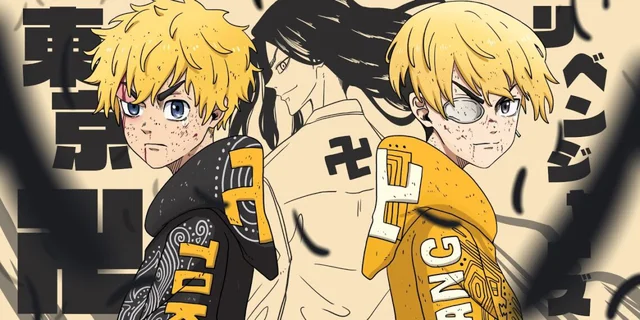
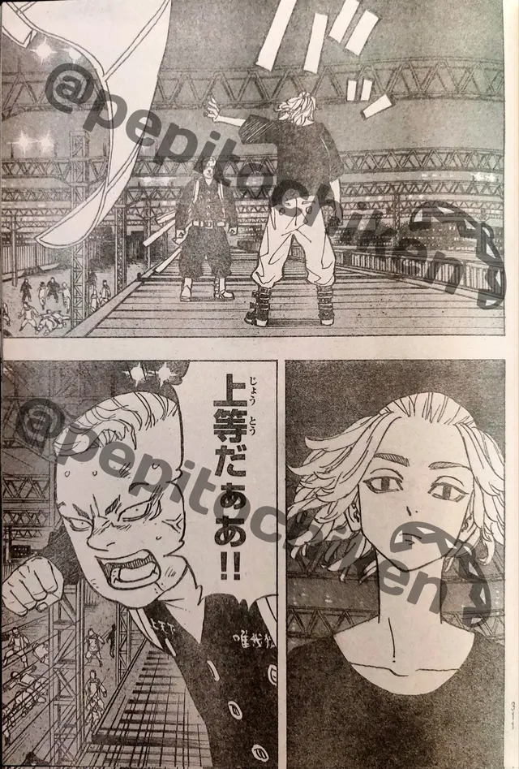
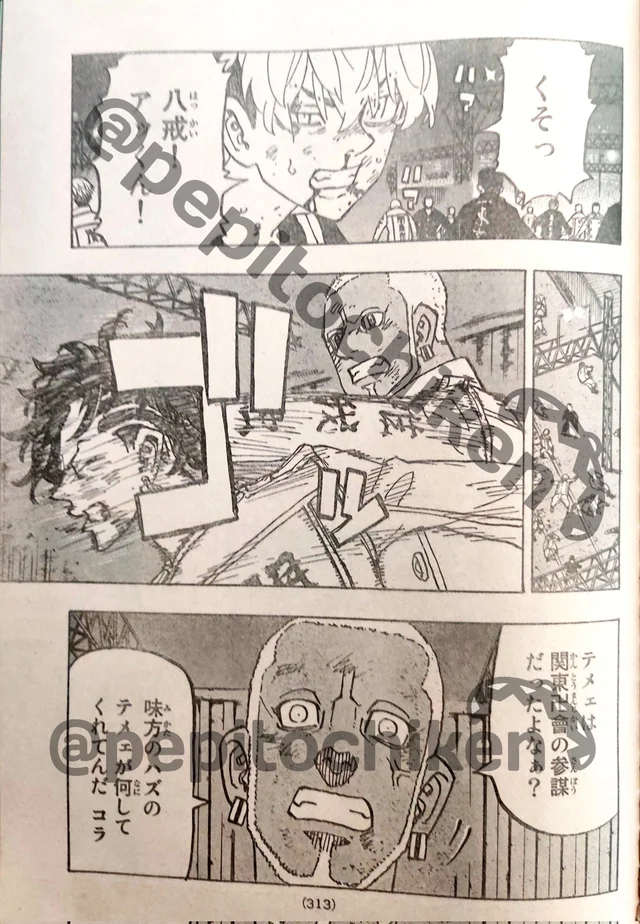
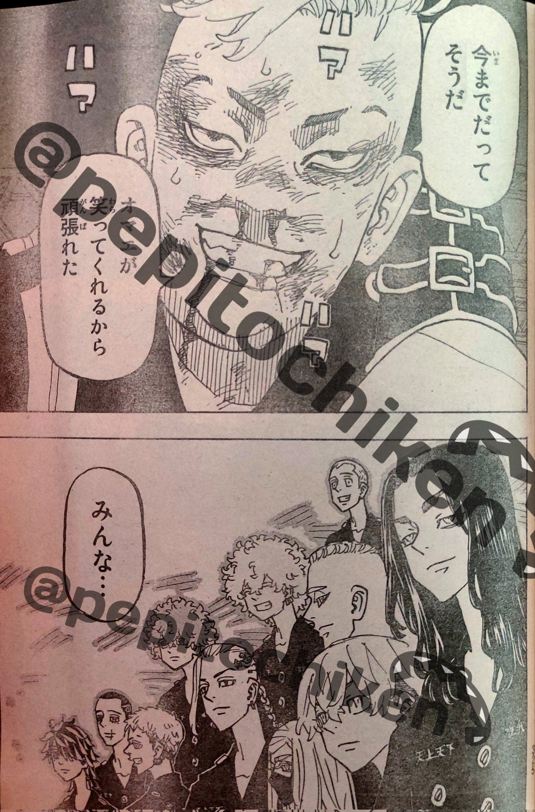

Ở chap trước, cảnh cuối chứng kiến Pahchin bước lên và thách thức Mikey. Trong Tokyo Revengers chap 252, những hình ảnh mới nhất cho thấy cả 2 sẽ chứng thức đụng độ với nhau trong một trận chiến giữa 2 người bạn cũ. Điều mà khán giả quan tâm là Mikey liệu có thẳng tay với Pahchin hay không khi mà xét về thực lực rõ ràng thủ lĩnh của Kantou Manji được đánh giá cao hơn.
Thái độ của Mikey trong trận chiến với Pahchin sẽ quyết định xem thực sự thái độ của anh trong trận chiến cuối cùng này là như thế nào. Không chỉ có người bạn cũ Pahchin, muốn trở thành kẻ thống trị tất cả anh sẽ phải đánh bại những người đã từng đồng hành cùng mình. Đó có thể bắt đầu với cái tên Pahchin, sau đó là những thành viên khác đang theo Takemichi.
Bên cạnh trận chiến giữa Mikey và Pahchin thì trong Tokyo Revengers chap 252 chúng ta cũng sẽ được chứng kiến cảnh Koko cùng với Inui chống lại cặp đôi Waka và Benkei. Có vẽ như Koko đã hiểu ra rằng Takemichi có lẽ là người sẽ thay đổi tương lai của tất cả và việc anh cần làm là giúp đỡ Inui đáng bại cặp đôi Waka và Benkei.
Cũng trong những hình ảnh mới nhất của Tokyo Revengers chap 252, chúng ta thấy nhân vật quan trọng thứ 2 của Kantou Manji là Hanma cũng ra tay hành động. Kẻ từng được cho là ngang ngửa với Draken tỏ ra thách thức tất cả. Hanma nhanh chóng đánh bại Hakkai và Akkun. Chifuyu và Mitsuya phải hợp sức để cầm cự trước đối thủ quá mạnh.
